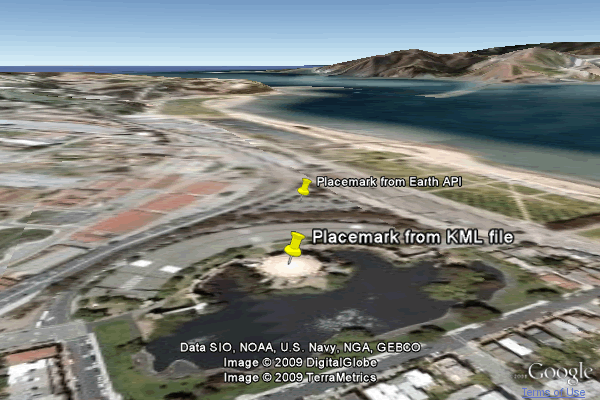

©2010 Google -
Code Home -
Terms of Service -
Privacy Policy -
Site Directory
Google Code offered in:
English -
Español -
日本語 -
한국어 -
Português -
Pусский -
中文(简体) -
中文(繁體)
KML is an open-standard markup language for the display of geographic data in geo-browsers. The Google Earth Plugin can import KML in different ways, in order to display features, tours, and views. The plugin supports all KML 2.2 tags, as well as extensions to KML using the gx namespace.
The plugin can also return KML representations of features, whether those features were imported as KML or created with the API.
The information in this document is a reference guide to KML import functions. For additional walkthroughs and examples of importing KML, please read An Overview of Using KML in the Earth API, in the Articles section of this site.
There are three methods of importing KML into the plugin.
KmlNetworkLink loads a KML or KMZ file from a specified URL. The fetched KML can
then be added to the plugin just as any other object, using ge.getFeatures().appendChild().
fetchKml also loads KML from a URL, but returns a KmlFeature object representing the root KML feature. The object's KML DOM can be accessed and updated before it is appended to the plugin's KML DOM.
parseKml takes a KML string, and also returns a KmlFeature object. As with fetchKml, the returned object's KML DOM can be accessed.
Each method is described in more detail below.
KmlNetworkLink references a KML or KMZ file by its URL. The contents
of the file can be added into the Earth instance, but they cannot be manipulated
before being displayed - there is no access to the KML's DOM. A NetworkLink is
a standard way of importing content in the KML language; refer to the KML
Reference for more information.
Source: http://code.google.com/apis/earth/documentation/samples/kmlnetworklink_example.html
var link = ge.createLink('');
var href = 'http://code.google.com/'
+ 'apis/earth/documentation/samples/kml_example.kml'
link.setHref(href);
var networkLink = ge.createNetworkLink('');
networkLink.set(link, true, true); // Sets the link, refreshVisibility, and flyToView
ge.getFeatures().appendChild(networkLink);
KmlNetworkLink accepts a flyToView argument. Setting this to true will update the plugin's view to the first LookAt or Camera view in the Document level of the KML file, if one exists. The example above uses set(link, true, true), with the last argument referring to flyToView. You can also call setFlyToView(true) for the same result.
fetchKml and parseKml accept KML in different ways,
but both return a KmlFeature object, allowing for access to, and manipulation
of, the object's hierarchy (its children and other descendant features). For information
about available functions, refer to the Containers chapter
of this Developer's
Guide.
fetchKml calls the specified callback function when a success or failure message is returned; parseKml returns the object immediately. fetchKml's asynchronous behavior allows the plugin to continue while the network fetch is completing.
Source: http://code.google.com/apis/earth/documentation/samples/fetchkml_example.html
fetchKml requires the URL of a KML or KMZ file, and returns a KmlFeature
object.
var href = 'http://code.google.com/'
+ 'apis/earth/documentation/samples/kml_example.kml';
google.earth.fetchKml(ge, href, function(kmlObject) {
if (kmlObject)
ge.getFeatures().appendChild(kmlObject);
});
Source: http://code.google.com/apis/earth/documentation/samples/parsekml_example.html
parseKml requires a KML string, and returns a KmlFeature object.
var kmlString = ''
+ '<?xml version="1.0" encoding="UTF-8"?>'
+ '<kml xmlns="http://www.opengis.net/kml/2.2">'
+ '<Document>'
+ ' <Camera>'
+ ' <longitude>-122.444633</longitude>'
+ ' <latitude>37.801899</latitude>'
+ ' <altitude>139.629438</altitude>'
+ ' <heading>-70.0</heading>'
+ ' <tilt>75</tilt>'
+ ' </Camera>'
+ ' <Placemark>'
+ ' <name>Placemark from KML string</name>'
+ ' <Point>'
+ ' <coordinates>-122.448425,37.802907,0</coordinates>'
+ ' </Point>'
+ ' </Placemark>'
+ '</Document>'
+ '</kml>';
var kmlObject = ge.parseKml(kmlString);
ge.getFeatures().appendChild(kmlObject);
fetchKml and parseKml don't support flyToView(), as KmlNetworkLink does. If your
KML file has a LookAt or Camera element at the top level of the Document container,
you can get the view and assign it as the plugin's view:
if (kmlObject.getAbstractView()) ge.getView().setAbstractView(kmlObject.getAbstractView());
The fetched KML object's DOM can be accessed and modified before or after the
KML features are displayed. In the example below, a placemark is created using
the Earth API, and is then appended to the KML object returned by the fetchKml() or
parseKml() function. When the KML object is added to Earth,
the API-created placemark is included.

KML: http://code.google.com/apis/earth/documentation/samples/kml_example.kml
<?xml version="1.0" encoding="UTF-8"?>
<kml xmlns="http://www.opengis.net/kml/2.2">
<Document>
<Camera>
<longitude>-122.444633</longitude>
<latitude>37.801899</latitude>
<altitude>139.629438</altitude>
<heading>-70.0</heading>
<tilt>75</tilt>
</Camera>
<Placemark>
<name>Placemark from KML file</name>
<Point>
<coordinates>-122.448425,37.802907,0</coordinates>
</Point>
</Placemark>
</Document>
</kml>
HTML: http://code.google.com/apis/earth/documentation/samples/fetchkml_dom_example.html
var placemark = ge.createPlacemark('');
var point = ge.createPoint('');
point.setLatLng(37.803521, -122.450274);
placemark.setName('Placemark from Earth API');
placemark.setGeometry(point);
var href = 'http://code.google.com/apis/earth/'
+ 'documentation/samples/kml_example.kml'
google.earth.fetchKml(ge, href, function(kmlObject) {
if (kmlObject) {
if ('getFeatures' in kmlObject) {
kmlObject.getFeatures().appendChild(placemark);
}
ge.getFeatures().appendChild(kmlObject);
if (kmlObject.getAbstractView())
ge.getView().setAbstractView(kmlObject.getAbstractView());
}
});
You can use KmlFeature.getKml(), as described below, to confirm that the placemark has been added to the object.
The Google Earth Plugin can provide a feature's KML representation, so that the
feature can be displayed in any KML-compatible application. To obtain a feature's
KML, use KmlFeature.getKml().
Source: http://code.google.com/apis/earth/documentation/samples/getkml_example.html
var placemark = ge.createPlacemark('');
var point = ge.createPoint('');
point.setLatLng(37.803521, -122.450274);
placemark.setName('Placemark from Earth API');
placemark.setGeometry(point);
ge.getFeatures().appendChild(placemark);
var output = placemark.getKml();
output = formatKmlForHtml(output); // Replaces special characters with their character entities
document.getElementById('output_div').innerHTML = '<pre>' + output + '</pre>';
The formatKmlForHtml() function is below. It replaces angle brackets with their ASCII-equivalents, so that the KML file will display as text in the browser. In addition, it replaces tabs with two spaces, and formats the XML namespace declarations.
function formatKmlForHtml(output) {
output = output.replace(/</g, '<').replace(/>/g, '>');
output = output.replace(/\t/g, ' ');
output = output.replace(/\" xmlns/g, '\"\n xmlns');
return output;
}